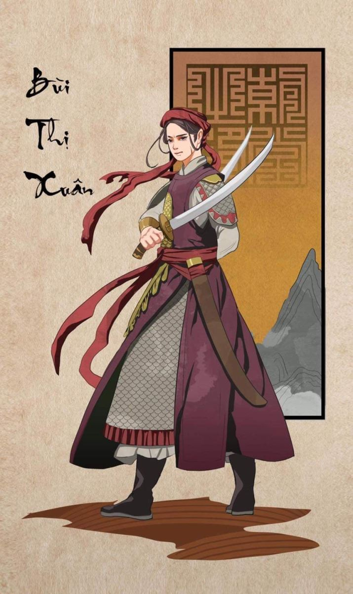

Một bọn sáu bảy người buôn gánh, để bồ sọt ở bên đường, vào ngồi nghỉ trong một quán nước dưới chân Đại Lãnh (Đèo Cả, phân giới Phú Yên, Khánh Hòa).
Lúc ấy mới xế trưa.
Họ ngồi uống nước, nói chuyện gẫu, cốt đợi những người đến sau. Chừng nào tụ họp vài ba chục người, sẽ kết đội qua đèo một thể. Tuy họ thông thuộc đường núi như trầu thuốc đựng trong hồ bao, đến nỗi nhớ chôn trong trí từng gốc cây, từng mỏm đá, từng lối tắt có thể chui qua đường đèo vừa gần vừa mau, nhưng với sáu bảy người, họ không dám để bước vào khoảng chót vót, um lùm, có khi giữa trưa mà giáp mặt không trông thấy nhau, mây bay quanh mình nghi ngút.
Không phải họ sợ lâu la cướp bóc gì, họ sợ beo cọp.
Cọp Khánh Hòa, ma Bình Thuận, đã thành tục ngữ.
Họ tán chuyện đã nhiều, chờ đợi đã lâu, có người mệt mỏi ngủ gà ngủ gật, phía bắc vẫn không thấy bóng người đồng bạn hay một khách bộ hành nào đi đến.
Ai nấy sốt ruột, thở dài:
- Mất cả thời giờ! Thế này thì không khéo chiều tối chẳng qua khỏi đèo!
- Hay là chúng ta cứ đi liều, xem nào? Một người xướng nghị với giọng miễn cưỡng.
- Phải, đi sáu bảy đứa với nhau để làm cỗ cho cọp nó xơi hử? Người khác trả lời. Chỗ này có tiếng cọp nhiều như chó con...
Một người có tuổi hơn nội bọn vội vàng bịt miệng người mới nói kia, và nhăn mặt, cằn rằn rằn:
- Chết!... Chết!... nghề buôn bán phải qua lại núi rừng, sao ăn nói chẳng từ tốn gì hết?... Phải nói là Sơn quân hay ông Ba mươi, chứ không nên xách mé... Ai nói gì, các ông nghe cả đấy!
- Bác chỉ khéo vẽ! Người bị trách vừa nói vừa cười. Gọi cọp bằng ông mà qua đèo một mình thì nó cũng xơi; trái lại, xách mé nhưng đi bọn đông, hắn ta đành lui trong bụi.
Mê tín chống với ngỗ nghịch, hai người sừng sộ lời qua tiếng lại, chỉ vì vấn đề lễ phép cùng chúa sơn lâm; bà chủ quán sợ họ đến dùng võ, không khỏi thiệt hại chén bát của mình, xen vào can ngăn:
- Này, các bác đừng cãi nhau nữa... Im mà nghe!... Có tiếng nhạc ngựa!
Mọi người làm thinh, mắt nhìn chăm chắm về phía Bắc, quả có tiếng nhạc ngựa nhong nhong, sắp sửa đến gần.
Giây lát, một người một ngựa đến trước quán dừng lại. Người ngồi trên mình ngựa nhẩy thót xuống.
Ngựa trông vạm vỡ, ra vẻ lương mã. Người rong rỏng cao, chưa đến ba mươi tuổi, mắt hơi xếch, hàm vuông và hô ra, dấu tỏ giàu nghị lực; mình nai nịt gọn ghẽ, lưng đeo cung tên và một bọc hành lý khá to, cạnh sườn dắt một thanh gươm dài, chuôi nạp sà cừ bóng lộn. Tướng mạo và khí giới đủ cho người ta nhận biết ngay là một tráng sĩ.
Khách thả ngựa một chỗ có nhiều cỏ non, rồi bước vào trong quán, niềm nở chào hỏi mọi người, tháo bọc hành lý trên vai xuống, đặt bên ghế ngồi, tươi cười và nói với bà lão chủ quán:
- Cụ bán cho tôi ba đọi nước rõ ngon, rõ đầy, nào!... Tôi đi luôn một hơi mấy trăm dặm đến đây, khát quá!
- Thưa ông, vậy chắc ông ở Phù Cát vô đây? Một người trong bọn lái buôn hỏi chuyện, còn những người khác ngồi lóng tai chú ý nghe.
- Xa hơn nữa! Khách đáp.
- Hay là Quy Nhơn phủ?
- Chính thế.
- Thế, ông đi suốt đêm ư?
- Tôi đi suốt đêm, một mạch.
- Con ngựa của ông quý hóa nhỉ, hắn là thiên lý mã?
- Vâng, cũng gần đâu đó... Các ông xem dáng nó có mỏi mệt tí nào không?
- Quả thế, ngựa trông như mới dắt ở tàu ra... Tôi nói khí vô phép, cả ông xem cũng ung dung, khỏe khoắn; nếu không có bụi bậm ở quần áo thì đố ai dám bảo ông đi đường xa đến đây.
- Vâng, có thể!
Khách gật đầu và mỉm cười, nói hai tiếng có thể với vẻ tự hào, tự phụ.
Bọn lái buôn thấy khách, có tướng mạo lạ, nói năng lanh lợi mà tử tế, lại ở miền ngoài vào, cho nên họ càng mặn hỏi chuyện, quên lửng việc cần qua đèo.
- Nghe nói miền ngoài độ này có giặc giã hoành hành lắm, có phải không ông? Một người trong bọn hỏi.
- Không, có giặc giã nào đâu! Khách trả lời có dáng sửng sốt.
- Ông nói thật hay bỡn?
- Tôi nói thật đấy:
- Quái, hay là ông từ giã Quy Nhơn đã lâu ngày cho nên không biết?
- Không, xe chiều hôm qua tôi ăn cơm ở Quy Nhơn rồi mới nhảy lên lưng con Thần phong, tề một mạch đến đây.
- Lạ nhỉ! Hôm qua chúng tôi gặp một tốp người đào nạn; họ kể chuyện rằng Biện Nhạc ở ấp Tây Sơn nổi lên làm giặc, đã chiếm thành Quy Nhơn, đuổi quan lớn Tuần phủ Nguyễn Khắc Tuyên chạy mất; cả Đạm Thủy Càn Dương cũng thất thủ rồi kia mà?... Việc quan hệ như thế, lẽ nào ông không biết; ông vừa ở Quy Nhơn lên đường hôm qua?
Khách uống một hơi, cạn tô nước sau cùng, trừng mắt xếch ngược, nói tiếng sang sảng như chuông:
- Thưa các ông, thật tôi chả biết có giặc nào hết... Tôi chỉ biết rằng: triều đình nhu nhược, để gian thần Trương Phúc Loan lộng quyền bại pháp, đồ khổ sinh dân, anh em ông Biện Nhạc họp đồng chí, khởi nghĩa binh, cốt trừ tàn khử bạo, cứu nước an dân; nếu các ông bảo những người ấy là giặc thì quả tôi không biết.
- Vậy thì Quy Nhơn quả thật đã thất thủ, thưa ông?
- Phải!... Nhưng tại sao các ông ân cần đến sự Quy Nhơn còn mất lắm thế?
- Tại là quê hương chúng tôi.
- À!... Rồi đây còn nhiều nơi khác sẽ về Tây Sơn, há phải một Quy Nhơn mà thôi ư?... Các ông chờ đấy mà xem!
Khách nói và đứng dậy khoác tay nải lên vai, sửa soạn đi.
Bọn lái buôn nhìn nhau, kinh ngạc. Người tiếp chuyện khách nãy giờ, sửng sốt hỏi:
- Giờ ông lại đi ngay.
- Vâng, tôi phải đi ngay, vì có việc khẩn yếu! Khách trả lời và hỏi lại. Từ đây tới Thạch Bi Sơn còn xa lắm không hè, các ông?
- Thưa không xa. Chỉ qua đèo này, rẽ sang phía tây nam là thấy Thạch Bi Sơn. Nhưng ông đến Thạch Bi Sơn thật à?
- Phải!
- Một người một ngựa, thế ư?
- Phải, tôi với con Thần phong!
- Nhưng trước hết là phải trèo qua Đại Lãnh?
- Phải, bây giờ tôi sắp trèo qua Đại Lãnh đây.
- Cũng một người một ngựa thế ư?
- Phải, tôi với con Thần phong!
Không phải ước hẹn, cả bọn lái buôn và con cái gia đình bà chủ quán, tất cả mười lăm miệng cùng thốt một tiếng kinh dị:
- Trời!
- Sao các người lại kêu Trời? Khách hỏi, tay thì sửa lại cái bọc mang trên lưng cho được thăng bằng, hai chân chỉ dợm bước ra khỏi quán.
Người lái buôn nhiều tuổi nhất đám mà ta đã biết, chắt lưỡi gọi giật:
- Này, ông ơi!
- Sao? Khách day lại hỏi.
- Chắc ông là người xa lạ, thuở giờ chưa đi lại con đường này bao giờ?
Vâng, có thế! Lần này là lần thứ nhất.
- Hèn gì ông không biết.
- Không biết thế nào cơ ông?
- Anh em chúng tôi bảy người đến đây từ lúc xế trưa, còn phải đợi mãi, không kết đội chừng vài ba chục người thì không dám qua đèo; là vì...
- Là vì thế nào? Ông nói thẳng cho tôi nghe với, chứ sao lại ngập ngừng thế? Khách hỏi dồn, có ý sốt ruột.
- Vì trên Đại Lãnh sơn quân nhiều có tiếng! Ông lái già trả lời, lộ vẻ sợ hãi trên mặt, nói hai tiếng sơn quân nhỏ như nói thầm.
Khách cười gằn:
- Tưởng là gì? Cái đó tôi đã biết trước. “Cọp Khánh Hòa...” đã thành tục ngữ, tôi có lạ đâu!
- Cơ khổ! Lại còn núi Bia nữa! ông lái già nói tiếp. Chúng tôi lo ngại giùm ông, vì thấy ông là người hiền lành, bỡ ngỡ không biết.
- Thì ở núi Bia cũng nhiều cọp như trấu là cùng, chứ gì?
- Nào phải! Ở đấy có cái nguy hiểm khác... Trong thung lũng núi Bia lâu nay, có bọn thày trò Giáo Hiến kết lều lập trại, tụ tập xưng hùng; triều đình muốn tập nã mãi không được. Hai ba lần quan quân ở Phú Yên đạo lần mò đến, toan bề đánh bắt, đều bị thầy trò hắn ta giết sạch. Nay ông một mình một ngựa đi đến, chúng định chắc ông là công sai, cho ông một mũi tôn độc thì ông phải chết. Nguy nhất là chúng núp trong hang đá bụi cây, không khi nào cho ông thấy mặt mà hòng cự lại.
Khách lại cười gằn:
- Đa tạ hảo ý của ông. Tưởng là ông mách cho điều gì lạ kia, chứ điều đó tôi cũng thừa biết từ trước.
- Vậy ông cứ nhất định đi à? Ông lái già ân cần hỏi lại.
- Vâng, tôi phải đi.
- Một người một ngựa thế mà ngang nhiên qua Đại Lãnh thẳng đến Trạch Bi Sơn à?
- Cố nhiên!
- Trời ôi! Ông tự tin vào chỗ nào mà dám mạo hiểm thập tử nhất sinh như thế? Hãy đợi chốc nữa có đông người, rồi cùng đi với chúng tôi có được không?
- Cám ơn các ông, tôi phải đi ngay... Chỗ nào tôi tự tin ư? Thưa, tôi tin vào hai bạn đồng hành tả phù hữu bật, chả sợ gì cả.
Mọi người xúm quanh đều lấy làm lạ, không hiểu khách là công sai, là cường đạo, là tiên quỷ hiện hình, hay có bản lĩnh đến thế nào, mà đơn thân độc mã, dám hung hăng làm việc mạo hiểm như vậy? Họ băn khoăn lo ngại, tự nghĩ như mình sẽ có tội và lương tâm cắn rứt không yên, nếu để cho người này mạo hiểm, rủi có bề nào. Cái nghề đi lại núi rừng buộc họ giàu lòng đoàn kết và thương yêu cứu giúp lẫn nhau. Bởi vậy khi nghe khách nói có hai bạn đồng hành, tả phù hữu bật, họ nghĩ ràng khách điên, muốn tìm cách cố lưu lại, đợi chốc nữa hay qua sáng hôm sau cũng đành, có đông người kết bọn sẽ đi.
Một người níu áo khách và hỏi mát:
- Ông định tự tử à?... Trơ trọi đơn thân độc mã, hai bạn đồng hành là hai bạn nào đâu?
- Hai bạn tôi đây này!
Khách ung dung trả lời một tay trỏ vào cung tên đeo bên mình, một tay nắm lấy thanh kiếm. Rồi cười kha kha, nói tiếp:
- Với hai thằng bạn này, tôi đi một người một ngựa qua Đại Lãnh đến Thạch Bi Sơn, trăm phần trăm an toàn vô sự, chẳng hổ báo lâu la nào dám động đến lông chân mình mà lo! Các ông phải chờ đợi ai làm gì, cứ đi với tôi, tôi bảo hộ cho.
- Ông chắc bảo hộ anh em chúng tôi được vô sự ư?
- Đã bảo cứ đi với tôi mà! Hễ gặp hổ thì giết hổ chết tươi, gặp giặc thì chém giặc tại trận, dù có bao nhiêu đứa cũng mặc. Tôi cam đoan bảo hộ các ông, nếu có một sầy da tróc vảy bởi cọp hay lâu la tôi cho phép mấy người kia chặt đầu tôi đi!... Nào có đi thì ra đi, kẻo tối ngày mất?
- Nếu thế thì may phước quá, ông cho anh em chúng tôi đi theo với!
Bảy người lái buôn hớn hở chạy ra lấy gồng gánh, dõng dược lên đèo nhờ có tráng sĩ hộ vệ.
Họ đi trước, tráng sĩ cỡi ngựa theo sau cung tên cầm sẵn trong tay và gươm tuốt ra ngoài vỏ.
Thạch Bi Sơn, tục danh núi Bia, ở phía tây nam Đạt Lãnh, chân vi hơn mười dặm, hình thế sầm uất, đỉnh cao và phẳng, đứng xa trông như bức thành xây. Mạch núi chạy dài, phía ngoài ra đến bờ bể, phía trong tiếp giáp sơn mạch Bà Nam, nơi có hai nước mọi độc lập, thuở xưa vẫn triều cống là: Thủy xá quốc và Hỏa xá quốc.
Tương truyền vua Lê Thánh Tôn, năm Hồng Đức nguyên niên (1470), thân đem 20 vạn quân vào đánh Chiêm Thành, mở đất nước, lấy ngay núi ấy làm phân giới nước ta và nước Chiêm.
Nhà vua sai người lên tận đỉnh núi, mài đá khắc bia gồm có 16 chữ sau này: '‘Chiêm thành qua đây, quân thua nước mất, An Nam qua đây, tướng chết binh tan. Vì thế, núi mới có tên là Thạch Bi Sơn hay núi Bia.
Tuy nhiên, văn bia lâu ngày đã mờ chữ mòn nét, không nhận ra được nữa, mười sáu chữ trên chỉ do truyền văn thể thôi, chưa chắc nguyên xưa có phải như vậy. Nhất là một việc quan hệ đến thế, không lẽ sử đời Hồng Đức và thi tập của Thánh Tôn ghi chép việc đi đánh Chiêm, không nói gì đến?
Nhiều người Tàu vào khoảng Đường Tống lại phỏng đoán rằng: đời Hán, Mã Viện sang đánh Giao Chỉ rồi lập đồng trụ phân giới ở trên núi ấy, rồi sau người Chiêm Thành nhổ đi.
Hình như đến đời Lê Thái Tôn người Chiêm mưu toan lấy lại đất Hóa Châu tức là đất Huế mà tiên vương họ đã dâng nhà Trần làm lễ cưới Huyền Trân công chúa, và định khiêng đồng trụ ra cắm ở Đèo Ngang, vì đó Thánh Tôn phải đem quân vào đánh rồi mài núi lập bia như trên đã nói.
Nhưng, chuyện bia đá này cũng như cột đồng kia, toàn là người sau ức đạc, chẳng ai biết rõ thực hư thế nào. Vì hình thể Thạch Bi Sơn hiểm trở quá, thuở nay không người nào dám in vết chân mình lên, không khám phá được dấu tích lịch sử có không, không có.
Thế mà trước bốn năm có câu chuyện chúng tôi đang kể đây nghĩa là vào khoảng năm Canh Dần (1770), có một người đem hai ba chục học trò đến ở thung lũng này mở trường dạy học, vỡ đất trồng màu. Thầy và học trò phần nhiều đem gia nhân quyến thuộc đi theo, tổ chức thành một thế giới riêng trong núi, tự nuôi tự trị lấy nhau, không chịu thuộc quyền triều đình quan phủ.
Người ấy tên là Trương Văn Hiến, vì chuyện dạy học, nên người ta quen gọi là giáo Hiến.
Hiến là anh em thúc bá, có người nói chính là em ruột ông Trương Văn Hạnh, là quan ngoại hữu ở triều Đinh vương. Tính ông rất cương trực, thấy Trương Phúc Loan lộng quyền nhiễu dân thái quá, không thể chịu nổi, trước ông còn can ngăn, sau âm mưu với một số đồng liêu đồng chí, định giết kẻ gian thần, sửa lại triều chính. Không may sự cơ bại lộ, bị Phúc Loan hãm vào tử tội và định tru di đến cả họ hàng bà con.
Lúc ấy Hiến đang ở Phú Xuân, sợ mang vạ lây, vội vàng đáp thuyền vào cửa Hàn, định nương náu ở Quảng Nam. Nhưng Phúc Loan nghe danh Hiến có học, lại giỏi cả võ nghệ, lo sợ Hiến sẽ phục thù, cho nên ra lệnh tập nã rất gắt. Các bến đò quán chợ đều yết thị, tả vẽ hình dáng, giao hẹn ai chặt đầu đem nộp, sẽ được một bước bố thụ ký lục; trái lại, ai mà giấu giếm, bị tội lăng trì, làng nào chứa chấp, sẽ bị triệt hạ.
Như Ngũ Tử Tư ngày xưa đi trốn nước Sở, một đêm bạc trắng cả đầu, Hiến lo sợ quá cũng thế: người đang trẻ mà trong mấy hôm biến ra bạc đầu hóp má, trông như ông lão. Hình dáng khác hẳn, không ai nhận ra.
Sợ nấn ná ở Quảng Nam, nguy hiểm, vì đảng vũ gian thần ở đây nhiều, Hiến đi bộ đêm ngày, tiến vào Quy Nhơn, cho thật xa xôi cách tuyệt.
Đem sở học ra làm sinh kế, Hiến mở trường dạy học tại ấp Yên Thái. Dân vùng này đang oán hận triều đình, cho nên dù người biết rõ tông tích Hiến, cùng không muốn tố giác lập công với gian thần; huống chi thấy Hiến tài gồm văn võ, làm thày học quanh vùng, ai nấy lại đem lòng kính mến, ra sức bảo hộ. Nhờ thế, Hiến được ở yên?
Học trò đến thụ nghiệp khá đông; ai muốn học văn hay học võ, đều được dạy dỗ chu đáo.
Cả ba anh em Nhạc, Lữ, Huệ, và danh thần dùng tướng của triều Tây Sơn sau này như đô đốc Trương Văn Đa, Đặng Văn Chân, thái phó Trần Quang Diệu đều là thụ nghiệp môn sinh.
Anh em Tây Sơn đến học độ ba năm. Nhạc chuyên học văn, Lữ và Huệ học võ. Nhất là Huệ, tướng mạo khôi vĩ, học tấn tới vượt cả mọi người, ông giáo Hiến rất yêu vì, càng gia công dạy bảo, thường khoe Huệ với người ta:
Chàng thiếu niên này, tương lai không biết đâu mà lường, chỉ tiếc rằng người e không thọ!
Nhân lúc bấy giờ dân gian có câu sấm ngữ “Tây khởi nghĩa, bắc thu công”..Ông bảo riêng anh em Nguyễn - Nhạc:
- Các anh có lập chí cao xa gì không? Câu sấm “Tây khởi nghĩa” có lẽ ứng vào các anh là người ấp Tây Sơn đấy.
Chung cả học trò, ông thường khuyên ai nấy nên lập chí hướng cho to, lấy việc cứu thế an dân, trừ tà khử bạo, làm phận sự nam nhi, chứ đừng cầu những cái lợi lộc công danh tầm thường như thói thiên hạ.
Một cách gián tiếp, và mỗi ngày một tí, ông nhồi vào trí não học trò những tư tưởng cách mạng triều đình thử thời. Cái gánh thù nhà, ông tự biết không đương nổi, muốn đặt trên vai học trò.
Cũng vì thế, tông tích khả nghi của ông dần dần bay đến tai quan lại địa phương.
Sợ nguy đến nơi, ông vội vàng thu xếp giã từ Yên Thái để tránh đi nơi khác; ông nói:
- Đã thế, ta vào ở non xanh rừng rậm, thật biệt mù hiểm hóc, thử xem chúng nó làm gì được ta!
Có vài chục học trò tình nguyện đi theo ông; họ đem cả gia đình và khí cụ canh nông, nhắm mắt theo thay, hễ ở chỗ nào thì khai khẩn sinh nhai chỗ ấy.
Thế rồi không trống không kèn, ông dẫn ngót bốn chục người, cả học trò với gia nhân họ, đàn ông có, đàn bà có, vào ở trong thung lũng Thạch Bi Sơn.
Thầy trò xuất lực đốn cây dựng nhà vỡ đất trồng tỉa cày cấy, lập nên một nước riêng ở trong một nước, tự sinh sống đùm bọc nhau, không giao thiệp với ai, cũng không phục tòng phụ thuộc ai. Mỗi ngày, ngoài giờ làm lụng, ông giáo Hiến dạy học trò đánh quyền múa gươm, bắn cung cưỡi ngựa, quanh quân trong khoảng núi non mà mình làm chủ.
Những người đi buôn bán trên mọi thường qua lại đây, thày trò tuyệt nhiên không đòi tiền mãi lộ hay quấy nhiễu gì, nhưng nếu là người công sai hoặc binh lính ở đạo phú Yên, lò mò đến dò la khiêu khích, tất được để da gởi thịt lại núi Bia, mười kẻ chỉ về được một hai là phúc.
Trong vòng một năm, công cuộc xếp đặt đã thành cơ ngũ; Lều trại dựng lên san sát, hoặc một gia đình ở riêng, hoặc hai ba người ở chung với nhau; lương thực cũng ăn chung đổ lộn, gạo thóc có, ngô khoai có; hằng ngày học trò đi săn bắn, chim chóc và thịt thú rừng ăn không hết, còn thừa phơi khô.
Tóm lại thày trò lập riêng với nhau một thế giới tự chủ, hầu như đoạn tuyệt giao thiệp với bên ngoài, đến nỗi chung quanh Thạch Bi Sơn trở ra có việc biến chuyển gì thầy trò cũng không biết, và cùng không cần biết.
Khoảng năm Nhâm Thìn, có một bà lão dẫn một cậu trai trẻ đến, xưng là mẹ con, lạy xin thu nghiệp.
Bà lão độ sáu mươi ngoài, tai hơi nghễnh ngãng, nhưng cặp mắt còn tinh anh và tác người trông khỏe mạnh, nở nang, không ra dáng một người đã gánh bấy nhiêu xuân thu trên vai. Còn người trai trẻ mà bà nhận là con, diện mạo khôi ngô, tay chân mềm mỏng như con gái; xem dáng người và nét mặt dáng ngót đôi mươi, nhưng bà nói rằng cháu mới có 13 tuổi.
Hành lý của hai mẹ con chỉ có một cái bọc quần áo, cơm khô và hai chục nén bạc, xỏ vào cây đòn dài năm thước, chính bà lão vác trên vai. Thoạt trông, người ta tưởng là đòn tre, chừng nhìn kỹ mới biết là một cây gậy sắt, nặng đến năm sáu chục cân.
- Làm sao bà lão biết chỗ này mà đưa đến? Ông Giáo Hiến dòm kỹ tướng mạo hai mẹ con và hỏi. Mẹ già con bé thế mà dám xông pha rừng núi ư?
- Bẩm ông, chúng tôi nghe đại danh ông đã lâu; thoạt tiên tìm đến ấp Yên Thái, người ta chỉ dẫn vào đây. Vì lòng thiết tha mộ đạo tìm thầy cho con học, chúng tôi đánh liều xông pha, nhờ có trời Phật phù hộ, không ngại ngùng sợ hãi gì cả...
Ông Giáo Hiến chưa kịp hỏi thêm, bà lão đã nói tiếp:
- Vả lại chúng tôi có một bức thư người ta gửi trình ông.
- Không biết người viết thư là ai và trong nói gì, chỉ thấy ông Giáo Hiến xem thư rồi niềm nở hỏi chuyện, có vẻ tin cậy, thân mật:
- Thế cháu bao nhiêu tuổi?
- Bẩm ông, cháu còn nhỏ dại lắm, năm nay mới có mười ba...
- Trời ơi! Tác người đầy đặn thế mà mới có mười ba tuổi thôi à?
- Bẩm vâng, tuổi Tân Tỵ.
- Tên họ?
Bà lão làm bộ như đãng trí, một lát mới nói:
- Bẩm, cháu họ Bùi, con nhà côi cút, hiếm hoi, từ nhỏ vẫn gọi cháu là thằng Mảnh vì tôi là đàn bà dốt nát, không biết đặt thế nào cho hay. Bây giờ nhân tiện xin ông cho cháu một chữ làm tên.
- Bà sinh cháu ra ở đâu? Ông giáo Hiến hỏi.
- Thưa, ở Phú Xuân.
- Vậy thì đặt tên cho nó là Xuân, đệm chữ Văn hay chữ Phùng nghe hay hơn
- Đa tạ ông, ba chữ Bùi Phùng Xuân nghe hay lắm!
- Thế cháu đã học vỡ lòng chưa Xuân? Giờ ông Giáo hỏi người con.
- Bẩm cụ, cháu đã học được ít nhiều chữ nho! Chính Xuân trả lời.
- Bây giờ lại muốn kế tiếp học văn để thi cử chứ gì?
- Thưa không, cháu xin học võ.
Bà lão xếp hai chục nén bạc trên khay trầu, bảo con lạy ông Giáo Hiến hai tay và nói:
- Xin ông nhận lễ nhập môn, từ nay cháu là đệ tử ông, trăm sự nhờ ông dạy bảo, thân già này chỉ trông cậy có nó và tương lai có thể nào trông cậy hoàn toàn ở ông.
- Được rồi, đã có thư của bạn tôi giới thiệu, tôi vui lòng nhận cháu là môn sinh và dạy bảo nó tận tâm! Ông Giáo Hiến trả lời và tay gạt gói bạc ra. Nhưng còn tiền bạc thì bà thu về, tôi không nhận đâu. Ở đây, ai nấy xuất lực mà sinh sống học hành, có cần gì tiền bạc?... Còn bà, bà cũng ở đây với con chứ?
***
Thưa vâng, trước khi đến đây, tôi đã biết rõ cách thức sinh hoạt giáo huấn của ông thế nào rồi... Từ nay, mẹ con tôi xin làm dân Thạch Bi Sơn y như mọi người: cháu thì học ông, tôi thì xuất lực trồng cây cuốc đất mà sống, góp vào cuộc sinh tồn chung. Bởi vậy, tôi thành tâm dâng cả sự sản vốn liếng của tôi có bấy nhiêu đây, không phải để trả tiền học cho cháu, nhưng xin ông nhận lấy, để mua sắm khí cụ vật dụng gì cần dùng cho cuộc sinh tồn chung cả mọi người. Ví dụ cày cuốc trâu ngựa chẳng hạn. Tôi tưởng ông nên cho người lên xứ mọi mua trâu ngựa để khai khẩn thêm, hình như ở đây còn thiếu vật dụng ấy mà sự khai khẩn có thể được hơn... Nếu ông không nhận lòng thành này thì mẹ con tôi xin ra khỏi Thạch Bi Sơn ngay, người ta nói lòng thành cảm được thần minh, có lẽ bực kỳ tài cao sĩ như ông lại chẳng hiểu cho?
Bà lão nói rất thiết tha ân cần, mà lại có lý thành ra ông Giáo Hiến không thể từ chối.
Tuy vậy, ông phải trầm ngâm suy nghĩ, không hiểu mẹ con nhà này, tất có tung tích ẩn khúc thế nào, chứ không phải giản dị là “một người mẹ mộ đạo nghe danh muốn tìm đến cho con tòng học” như trong bức thư của người cố giao ở ấp Yên Thái giới thiệu.
Ông tự hẹn trong trí, để thong thả sẽ kéo tấm màn bí mật này lên.
Từ đấy, xã hội Thạch Bi Sơn thêm hai tên dân mới, là mẹ con Bùi Phùng Xuân, ở riêng một túp lều đầu núi. Hằng ngày, bà lão đi làm việc cày cuốc trồng tỉa như mọi người, bà làm như một tay lực điền mà tính ý lại vui vẻ, nên ai nấy đều kính nể, yêu mến.
Xuân thì chuyên việc học tập ở trường võ, sáng ý, chăm chỉ và rất chịu khó; ông Giáo Hiến thấy thế càng có lòng thương, hết sức dạy dỗ, cho chàng được chóng theo kịp các bạn đồng môn.
Chàng hơn được các bạn là biết chữ, thành ra tôn sư có thể đem những sách chuyên môn về việc binh nghề võ, như Kiếm pháp bí truyền, Binh thư yếu lược và Tôn tử thập tam thiên, giảng dạy kỹ lưỡng, khiến chàng vừa hiểu lý thuyết, vừa được thực hành, nhờ đấy mà công phu luyện tập mau thấy tấn tới hơn người.
Duy có tính nết nhu mì, điềm đạm, ít nói ít cười, lại hay cả thẹn: ví dụ trong khi thao luyện một bài kiếm, một đường roi chẳng hạn, hơi có chút nào lỗi lầm, đủ khiến chàng tự lấy làm thẹn thùng, đỏ mặt tía tai lộ vẻ kiều diễm như người con gái. Anh em bạn học lấy làm lạ báo nhau:
- Quái! Thằng Xuân có lẽ bà mụ lỡ tay hay quên kiếc thế nào, giá nặn nó là con gái thì phải hơn!
Tuy vậy, sự học của chàng không vì thế mà kém phần tiến bộ, xuất sắc. Nhờ ông thầy khéo cảm hóa, khuyến khích, không bao lâu chàng biến đổi khác hẳn, trở nên lỳ lợm, bạo dạn lạ thường, bạo dạn đến quên cả nguy hiểm.
Sau một năm rưỡi, Xuân tinh thông kiếm pháp, do công phu tập luyện ráo riết mà cũng do thiên tài góp vào một phần.
Những lúc Xuân múa kiếm, người ta chỉ thấy sắt chớp nhoáng chung quanh mình chứ không trông thấy người. Chàng lại có tài phóng thanh gươm đi cách xa đôi ba trăm bước, đâm trúng bất cứ vật gì mình nhắm làm đích. Bạn cùng học kiếm phải tấm tắc kính phục, bảo rằng trong bọn đồng môn được thầy truyền kiếm pháp, mấy năm về trước có Nguyễn Huệ, giờ thì có Phùng Xuân, mới đi tới chỗ tuyệt kỹ như thế.
Chàng cỡi ngựa bắn cung nỏ cũng thiện nghệ. Mỗi khi bạn học thao diễn nghề bắn với nhau, chỉ có dăm người với chàng bắn trúng hồng tâm luôn năm phát, còn những người kia chỉ trúng được ba bốn. Một hôm, người ta muốn thử tài, trỏ vào đàn chim đang bay, thách chàng bắn trúng con thứ ba. Ứng thanh, mũi tên vụt lên, bắn đúng con chim ấy ngã. Ông giáo Hiến vui mừng dạy dỗ được một người học trò giỏi như thế ông nói:
- Dưỡng Do Cơ tài bắn nhất đời Chiến quốc, chẳng qua cùng thế thôi.
Giữa lúc ấy, người tráng sĩ lạ lùng mà ta đã thấy, gia roi tế ngựa gần đến Thạch Bi Sơn.

.